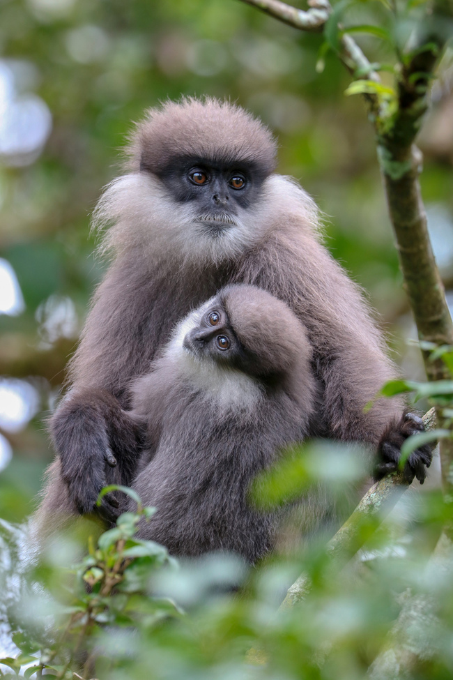

Discover Sri Lanka's Diverse Wildlife
Horton Plains National Park
Location: Nuwara Eliya District in the Central Province
Description: Nestled in the central highlands, Horton Plains National Park is a UNESCO World Heritage Site, Horton Plains is the highest plateau in Sri Lanka, with an elevation of 2,100–2,300 m (6,900–7,500 ft), and it covers an area of 3,160 hectares The park is renowned for its unique biodiversity, striking landscapes, and a variety of endemic flora and fauna. One of the most iconic features of Horton Plains is World's End, a sheer precipice that offers breathtaking views of the surrounding valleys and tea plantations. The park also encompasses Baker's Falls, a beautiful waterfall that adds to the park's natural allure. The terrain primarily consists of montane grasslands and cloud forests, creating a distinct and captivating environment.Numerous indigenous species can be found in Horton Plains, such as the highland sambar deer and the secretive Horton Plains slender loris. It is also an important watershed for Sri Lanka's main rivers, which makes it a crucial region for managing water resources and conserving wildlife.

Sinharaja Forest Reserve
Location: Southern Province
Description: Sinharaja Rainforest, a UNESCO World Heritage Site, is a pristine tropical rainforest located in the southwest lowland wet zone of Sri Lanka. Spanning an area of approximately 11,187 hectares, it is one of the last remaining primary rainforests on the island and is renowned for its exceptional biodiversity and ecological significance.Sinharaja is home to numerous endemic species, including the purple-faced langur, the Sri Lankan leopard, and a variety of colorful birds such as the Sri Lanka blue magpie. The forest also harbors a rich diversity of insects, amphibians, and reptiles, contributing to its status as a biodiversity hotspot.
Summary Table: Noteworthy Wildlife in Sri Lankan Locations
| Location | Wildlife | Interesting Facts | Image |
|---|---|---|---|
| Horton Plains National Park | Sri Lankan Sambar Deer | The largest deer species in Sri Lanka, known for its distinctive appearance with large, rugged antlers. | |
| Sinharaja Forest Reserve | Purple-faced Langur | An endangered primate species with a distinctive purple face, found exclusively in Sri Lanka. |  |
| Explore the diverse landscapes of Sri Lanka and witness the fascinating wildlife that thrives beyond the well-trodden paths of Yala and Wilpattu. Each location offers a unique glimpse into the rich natural heritage of this tropical jewel. | |||